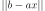
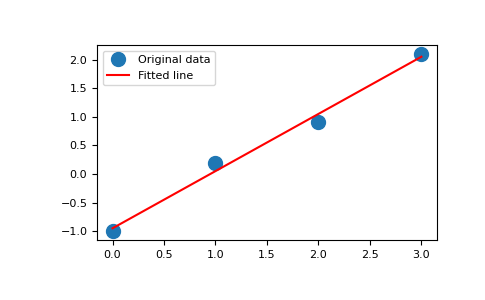

numpy.linalg.lstsq¶
-
numpy.linalg.lstsq(a, b, rcond='warn')[source]¶ Return the least-squares solution to a linear matrix equation.
Computes the vector x that approximatively solves the equation
a @ x = b. The equation may be under-, well-, or over-determined (i.e., the number of linearly independent rows of a can be less than, equal to, or greater than its number of linearly independent columns). If a is square and of full rank, then x (but for round-off error) is the “exact” solution of the equation. Else, x minimizes the Euclidean 2-norm .- Parameters
- a(M, N) array_like
“Coefficient” matrix.
- b{(M,), (M, K)} array_like
Ordinate or “dependent variable” values. If b is two-dimensional, the least-squares solution is calculated for each of the K columns of b.
- rcondfloat, optional
Cut-off ratio for small singular values of a. For the purposes of rank determination, singular values are treated as zero if they are smaller than rcond times the largest singular value of a.
Changed in version 1.14.0: If not set, a FutureWarning is given. The previous default of
-1will use the machine precision as rcond parameter, the new default will use the machine precision times max(M, N). To silence the warning and use the new default, usercond=None, to keep using the old behavior, usercond=-1.
- Returns
- x{(N,), (N, K)} ndarray
Least-squares solution. If b is two-dimensional, the solutions are in the K columns of x.
- residuals{(1,), (K,), (0,)} ndarray
Sums of residuals; squared Euclidean 2-norm for each column in
b - a*x. If the rank of a is < N or M <= N, this is an empty array. If b is 1-dimensional, this is a (1,) shape array. Otherwise the shape is (K,).- rankint
Rank of matrix a.
- s(min(M, N),) ndarray
Singular values of a.
- Raises
- LinAlgError
If computation does not converge.
See also
scipy.linalg.lstsqSimilar function in SciPy.
Notes
If b is a matrix, then all array results are returned as matrices.
Examples
Fit a line,
y = mx + c, through some noisy data-points:>>> x = np.array([0, 1, 2, 3]) >>> y = np.array([-1, 0.2, 0.9, 2.1])
By examining the coefficients, we see that the line should have a gradient of roughly 1 and cut the y-axis at, more or less, -1.
We can rewrite the line equation as
y = Ap, whereA = [[x 1]]andp = [[m], [c]]. Now uselstsqto solve for p:>>> A = np.vstack([x, np.ones(len(x))]).T >>> A array([[ 0., 1.], [ 1., 1.], [ 2., 1.], [ 3., 1.]])
>>> m, c = np.linalg.lstsq(A, y, rcond=None)[0] >>> m, c (1.0 -0.95) # may vary
Plot the data along with the fitted line:
>>> import matplotlib.pyplot as plt >>> _ = plt.plot(x, y, 'o', label='Original data', markersize=10) >>> _ = plt.plot(x, m*x + c, 'r', label='Fitted line') >>> _ = plt.legend() >>> plt.show()
